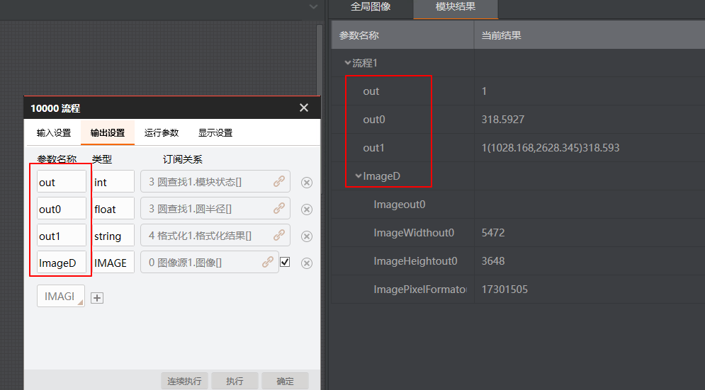

问题描述
环境：VM4.2及以上 + VS2013及以上
问题：如何通过二次开发获取流程输出或模块输出中的数据结果？
解决方法
获取数据结果可通过流程输出或模块输出两种方式。推荐使用流程输出，更符合高内聚低耦合的思想。
-
通过流程输出获取数据结果
-
完成流程配置中的输出设置，如下图所示。

-
通过代码获取整型、浮点型、字符串型数据。
VmProcedure vmprocess = (VmProcedure)VmSolution.Instance["流程1"];
var moduResult = vmprocess.ModuResult;
string str = moduResult.GetOutputInt("out").pIntVal[0].ToString();
string str1 = moduResult.GetOutputFloat("out0").pFloatVal[0].ToString();
string str2 = moduResult.GetOutputString("out1").astStringVal[0].strValue;
List<VmDynamicIODefine.IoNameInfo> ioNameInfos = VmProcess.ModuResult.GetAllOutputNameInfo();
string str3 = VmProcess.ModuResult.GetOutputString(ioNameInfos[2].Name).astStringVal[0].strValue;
-
通过代码获取图像数据。输出的IMAGE类型图像数据，可通过前面的参数名称ImageD直接获取。
ImageBaseData processImageData = VmProcess1.ModuResult.GetOutputImageV2(
"ImageD");
int width = processImageData.
Width;
int height = processImageData.
Height;
IntPtr imageByte = processImageData.
ImageData;
-
通过模块输出获取数据结果
-
通过如下代码获取模块的浮点型数据。
IMVSCircleFindModuTool tool = (IMVSCircleFindModuTool)VmSolution.Instance["流程1.圆查找1"];
var moduResult = tool.ModuResult;
string circleX = moduResult.OutputCircle.CenterPoint.X.ToString();
string circleY = moduResult.OutputCircle.CenterPoint.Y.ToString();
string circleR = moduResult.OutputCircle.Radius.ToString();
-
通过如下代码获取图像数据。
SaveImageTool saveImage=(SaveImageTool)VmSolution.Instance["流程1.输出图像1"];
var saveImageResult=saveImage.ModuResult.OutputImage;
byte[] imageData= saveImageResult.ImageData;
int imagePixelformat= saveImageResult.Pixelformat;